Chapter 0. 딥러닝(DeepLearning)¶
1절. 기계학습과 딥러닝¶
인공지능, 기계학습, 딥러닝¶
- 딥러닝 vs 기계학습 vs 인공지능
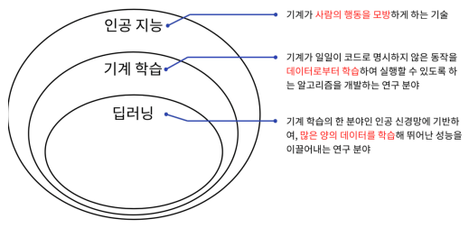
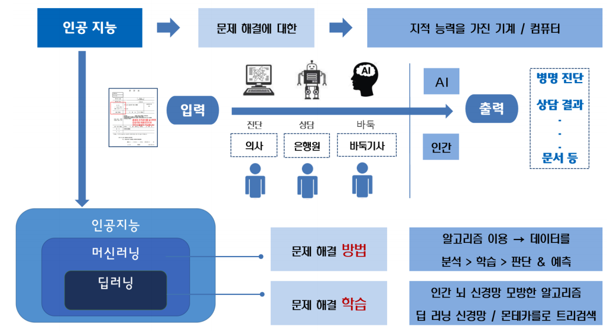
기계학습의 종류¶
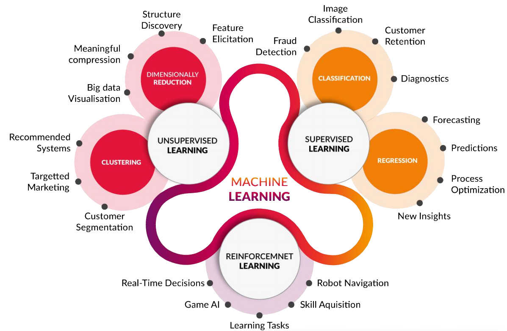
지도 학습(Supervised Learning)¶
- 데이터에 대한 레이블(Label)의 명시적인 대답이 주어진 상태에서 컴퓨터를 학습시키는 방법
분류(classification)¶
- 이산값(Discrete value)일 경우 해당
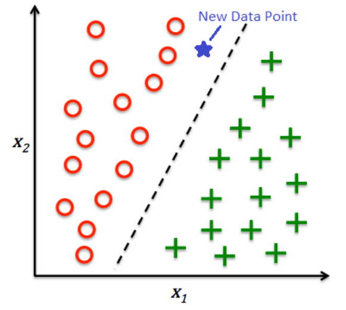
- ex) 이미지에 해당하는 숫자가 1인지 2인지?
회귀(regression)¶
- 연속값(Continuous value)일 경우 해당
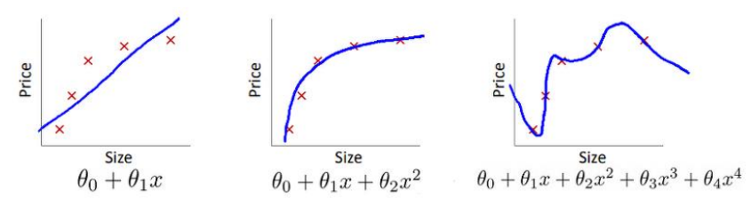
- 3개월 뒤 아파트의 가격은 2억 1천만원? 2억 2천만원?
비지도 학습(Unsupervised Learning)¶
-
레이블(Label)의 명시적인 대답이 주어지지 않은 상태에서 컴퓨터를 학습시키는 방법론
-
클러스터링(Clustering)
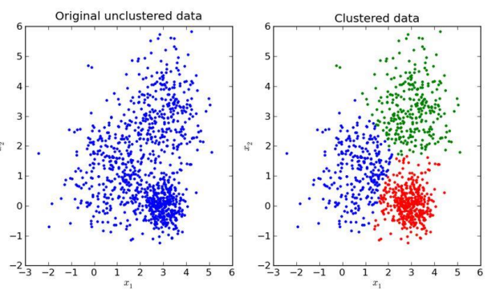
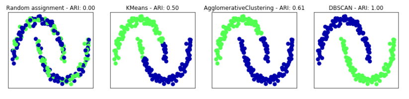
강화 학습(Reinforcement Learning)¶
- 잘한 행동에 대해 칭찬 받고 잘못된 행동에 대해 벌을 받은 경험을 통해 자신의 지식을 키워나가는 학습법
- 시행착오를 통해 수집되는 수많은 데이터 속에 숨겨진 패턴을 학습해 찾아내는 방법
- 어떤 임의의 존재(Agent)가 주어진 환경 내에서 어떻게 행동해야 하는지에 대해 학습
- 학습 과정은 다양한 상황에서 Agent가 한 행동에 대해 양 또는 음의 보상을 피드백으로 보상
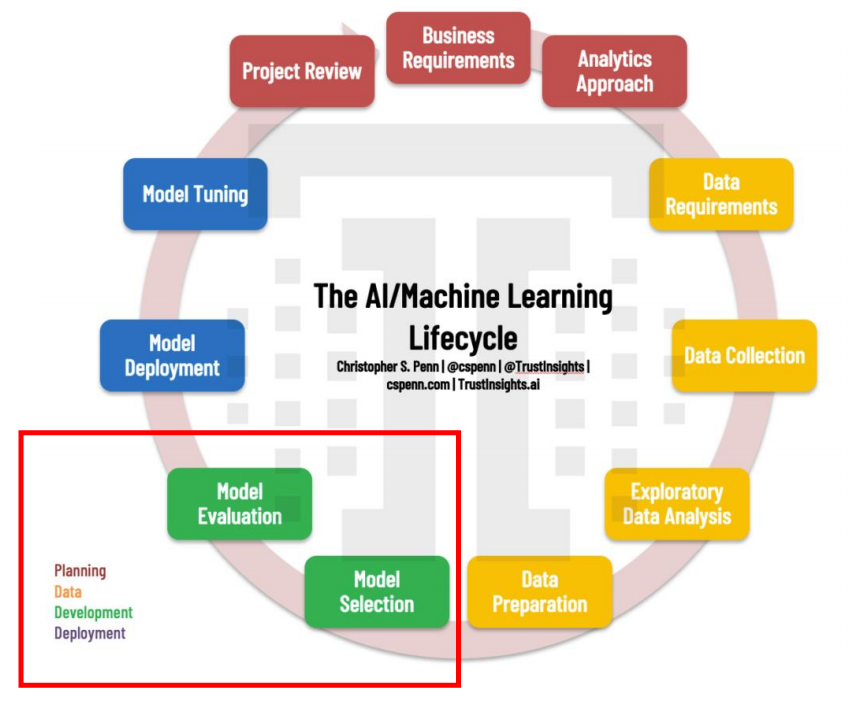
기계 학습 운영(MLOps)¶
- 기계 학습(ML) 워크플로 및 배포를 자동화하고 단순화하는 일련의 관행
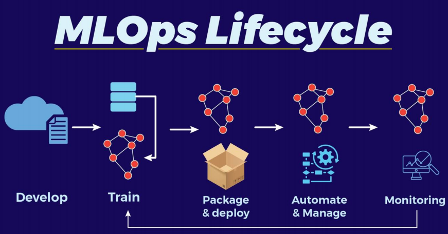
2절. 딥러닝의 예시¶
지도 학습 예시¶
- MNIST
- Fashion MNIST
- QuickDrawing
비지도 학습 예시¶
- 비지도 학습
- 정답 없이 새로운 것을 지속적으로 생성해내는 능력
- GAN(Generative Adversarial Networks)
- 최대한 진짜 같은 데이터를 생성하려는 생성 모델과 진짜와 가짜를 판별하려는 분류 모델이 각각 존재하여 서로 적대적으로 학습
강화 학습 예시¶
- Pac-Man
- Break-Out
강화 학습 과정¶
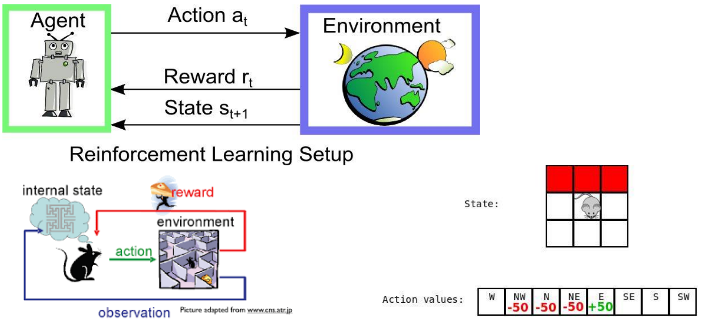
기계학습 분류¶
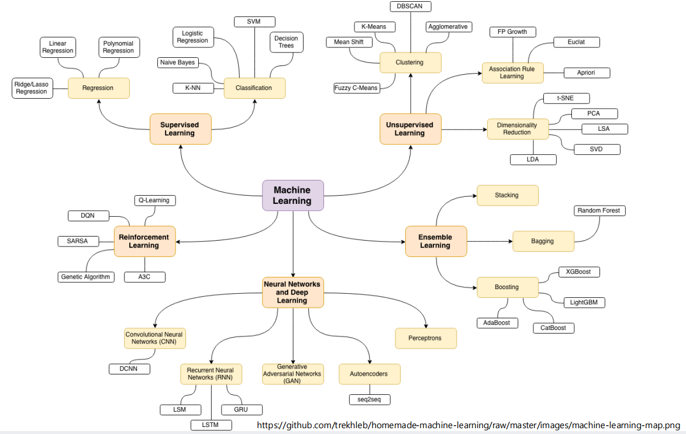
3절. 생성형 AI¶
주요 언어 모델¶
- 규칙을 가진 현상을 기계에 학습시킴으로써 현상 속에 내재된 패턴을 파악하고 미래 예측
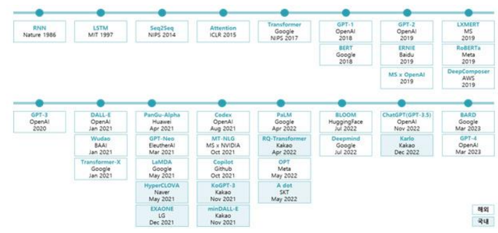
-
Transformer 기반 언어 모델
-
2017년, Google에서 제목 'Attention is all you need'로 논문 발표
- Attention 메커니즘을 적용한 Transformer 모델 소개
- RNN은 정보를 순차적으로 하나씩 입력받으며 순환 구조를 통해 과거에 대한 기억을 되살려 활용
-
Transformer는 정보를 한꺼번에 입력받으며 Attention 메커니즘을 통해 집중이 필요한 정보들 위주 스캔
-
BERT(Bidirectional Encoder Representations from Transfoormers, 2018)
-
Google이 Transformer 모델 기반 언어 표현을 사전 학습시키기 위해 고안한 방법론
- 대량의 텍스트 데이터로 사전 학습된 모델
-
기능
- 양방향 문맥 파악
- 마스크 언어 모델링
- 다음 문장 예측
- 특정 작업을 위한 Fine-Tuning(미세조정)
-
GPT(Generative Pre-trained Transformer)
- OpenAI가 대량의 데이터로 다양한 작업을 수행할 수 있도록 사전 학습한 Transformer 모델
- 특정 작업을 잘 수행할 수 있도록 사전 학습된 모델을 Fine-Tuning
- 일방향으로 나아가며 학습 및 예측을 하므로 문장 생성에 강점
- OpenAI가 버전을 거듭하며 발전시켜 온 모델(GPT-1, GPT-2, GPT-3, GPT-3.5, GPT-4 등)
- 기본적으로 모두 같은 구조를 가지나 버전이 올라갈수록 파라미터(Parameter, 매개 변수)의 개수 증가
- GPT-3.5에서 인간 피드백 기반 강화 학습(Reinforcement Learning with Human Feedback, 이하 RLHF) 적용
주요 이미지 모델¶
- Midjourney
- 텍스트 프롬프트에서 시각적 작품을 생성하는 AI 이미지 생성기
- DALLE
- OpenAI에서 개발 및 발표한 신경망
- 텍스트를 이미지에 연결하는 이미지 생성기(AI)
- 다양한 각도에서 사물 생성 가능
- 여러 사물의 다양한 상호 작용을 사진 형태로 생성
- 사진처럼 사실적인 시각적 출력을 원하는 사용자에게 적합
- 현재 총 2가지 버전 존재
- DALLE-2
- DALLE-3
- Stable Diffusion
생성형 AI 예시¶
- NVIDIA Picasso